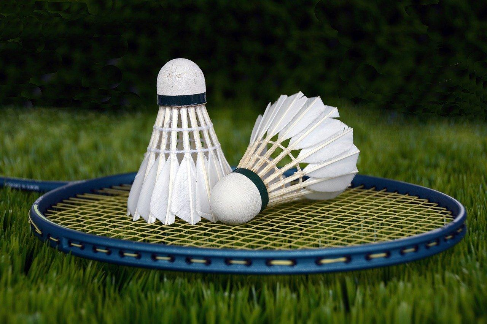

Kathleen Wang
Progress begins with failure
Fun Facts
- I've read over 50 books in the past year, most of them fantasy novels over 500 pages long.
- I can solve a 2x2 and 3x3 Rubik's cube.
- I'm a huge comic book & comic book movies fan.
Passions & Hobbies
 I like to think of myself as a pretty well-rounded person in terms of passions and activities; some of my favorite hobbies include drawing, painting, playing the piano and most recently, the violin.
In terms of sports, I love playing badminton with my friends and against other teams, but since I consider myself a socially-unstable introvert, my favorite activities usually happen to be at home, with me by myself.
These include, but are not limited to, reading fantasy, action, and science fiction novels, watching related movies, playing cheap first person shooter games, and developing a whole new personality reserved solely for social media.
Here are some other random facts about me: tomato and egg is my favorite dish, dragons are my favorite (mythical) animal, I loathe the sound of my Chromebook scrapping along a whiteboard table, and I’ve memorized every state & their flags in the U.S., every country in the world with their respective flags, the first 100 digits of pi, and every element on the periodic table.
I'm also addicted to Globle.
I like to think of myself as a pretty well-rounded person in terms of passions and activities; some of my favorite hobbies include drawing, painting, playing the piano and most recently, the violin.
In terms of sports, I love playing badminton with my friends and against other teams, but since I consider myself a socially-unstable introvert, my favorite activities usually happen to be at home, with me by myself.
These include, but are not limited to, reading fantasy, action, and science fiction novels, watching related movies, playing cheap first person shooter games, and developing a whole new personality reserved solely for social media.
Here are some other random facts about me: tomato and egg is my favorite dish, dragons are my favorite (mythical) animal, I loathe the sound of my Chromebook scrapping along a whiteboard table, and I’ve memorized every state & their flags in the U.S., every country in the world with their respective flags, the first 100 digits of pi, and every element on the periodic table.
I'm also addicted to Globle.
Extracurriculars & School Life
 As a sophomore attending Canyon Crest Academy, I have just about skimmed the beginnings of my young adult life. In terms of academics, I perceive myself as a straight A student cramming as many AP classes into her schedule and spending her days and nights studying without going out of her way to socialize or participate in large group activities. That being said, I do have a normal life outside of the vigorous and intensive studying I push myself through daily. In terms of clubs I’m most involved in, I’m on the school’s varsity badminton team, I participate in the CCA FTC robotics team, Roboravens, and I’m the treasurer of the Student Leadership Club (SLC), where I act as an executive officer to the Tech4Seniors branch, which, as the name suggests, consists of passionate student leaders helping to bridge the technological divide by assisting elderly individuals with their daily technical struggles. Outside of school, I enjoy STEM related activities like machine learning, app development, training for math competitions, and teaching contest math to younger students.
My Future Goals & Dreams

My visions for the future change daily, and I find it hard to pinpoint exactly what area of STEM I want to major in in college and dedicate myself to in my life beyond. Since ninth grade, the career I most associated with my future self was to be a robotics or mechanical engineer, having participated in two consecutive First Lego League (FLL) seasons in middle school and winning multiple championship awards throughout regional and state tournaments. However, as artificial intelligence and machine learning algorithms improve exponentially over the years, I’m beginning to wonder if the field I’m truly destined for is a more software-orientated, AI-related profession. As of writing, I’m already on my way to developing an Android UI that runs a speech emotion recognition model for the Greater San Diego Science and Engineering Fair (GSDSEF), so I’m once again caught between two financially and intellectually appealing paths. Nevertheless, my future is almost certainly sitting comfortably in the vast world of STEM, and though many depictions of the hardships of pursuing engineering and computer science majors send paralyzing waves of terror through me, I’m still very passionate about my academic choices and goals.